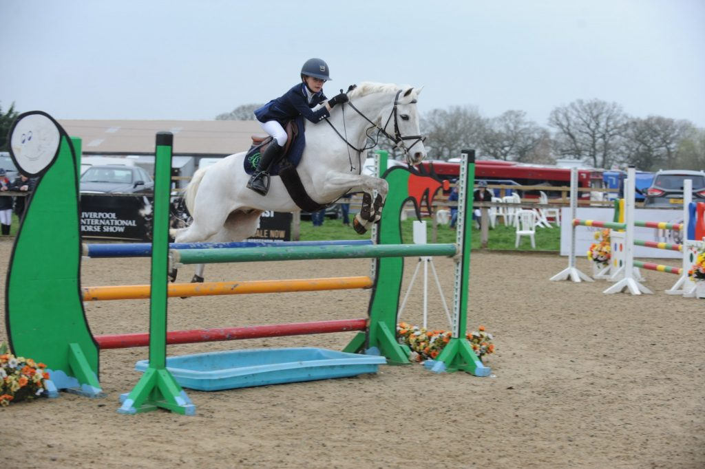
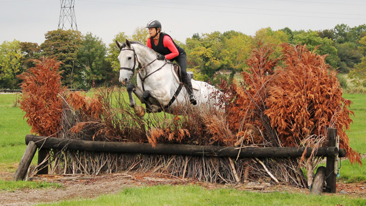
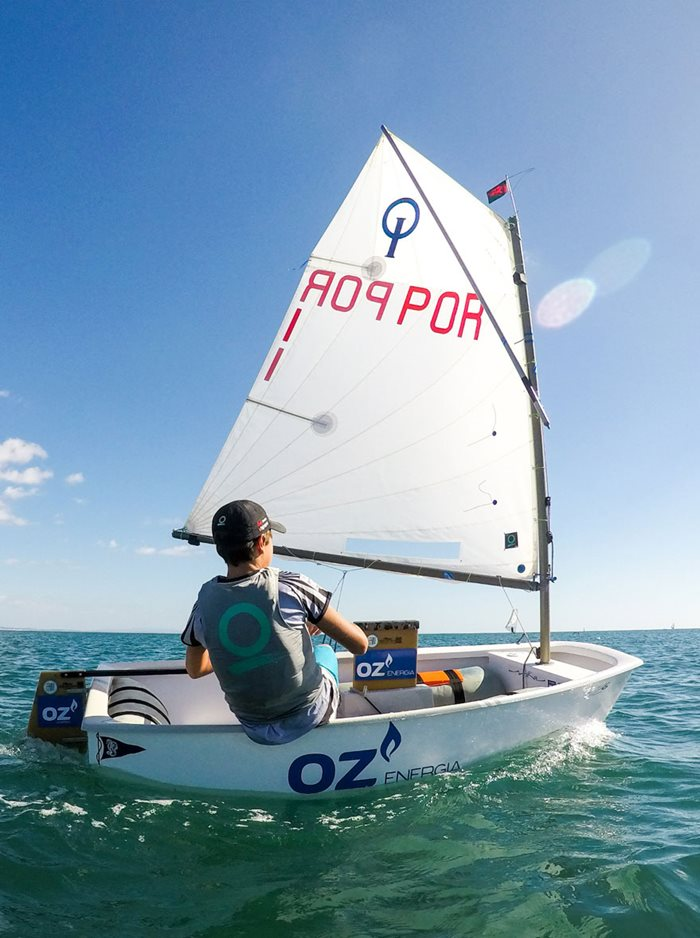
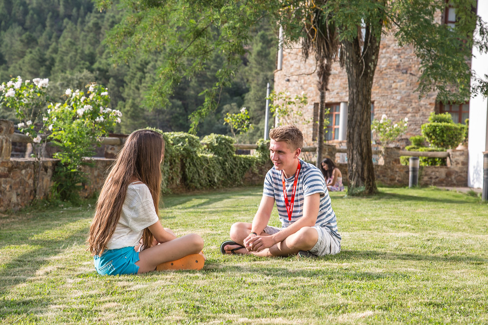
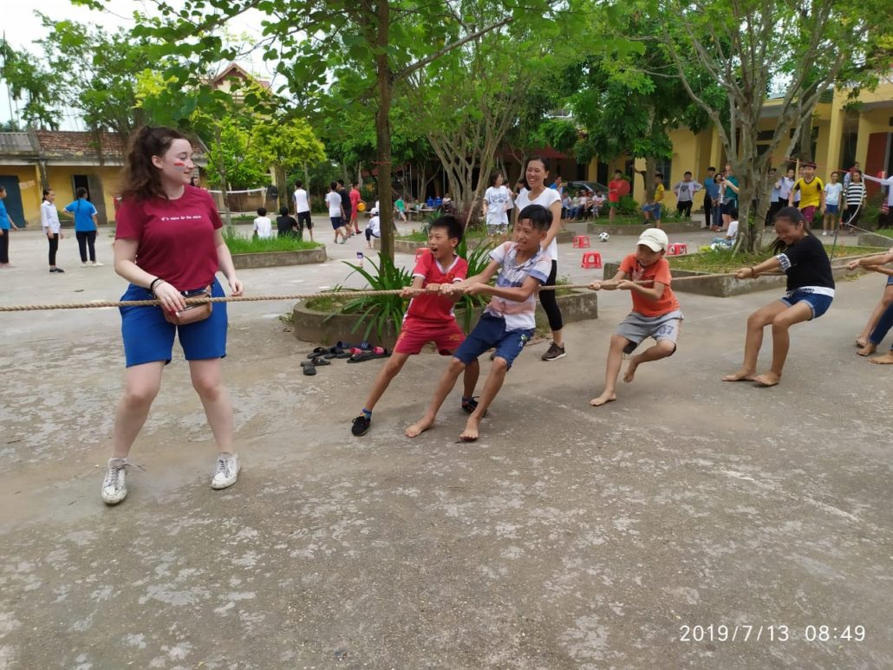

- 
- 
- 
- 
- 
Sport:
Horse Riding
I have been involved in horse riding since I was young and have been competing seriously since I was 12 years old. Some of my biggest achievements include: a bronze All-Ireland and three gold Munster championships in show jumping. I was also the captain of my secondary school equestrian team for three years. During my time as captain my school came third in the Munster interschools show jumping championship and claimed first place in the regional competitions on multiple occasions.
Sailing
I am also heavily involved in sailing. When i was younger I competed in regional competitions in the Optimist catergory (an Optimist is a small, one person boat, used for teaching children how to sail. I no longer compete in sailing but I have qualified as an instructor so in the summers, I coach children in sailing courses. I still crew for larger yachts in leagues when I have spare time.
Travel:
For the past two years, in summer I have spent two weeks volunteering in Spain teaching English to children in summer camps; much like the Gaeltacht here in Ireland. This work amounted to more than 400 hours voluntary work over the two summers. Travel is a big part of my life and I like to use my time abraod to do good and learn about the cultures I find myself immersed in. I am currently fundraising to travel to Vietnam for a month in the summer of 2020 with the charity SERVE. During my time in Vietnam I will be working in orphanges in underprivileged areas and in outreach programs to grassland communities.